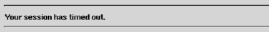

Table of Contents
Table of Contents
 Previous Section
Previous Section
Table of Contents
Previous Section
By assigning a timeout value to a session, you can ensure that the session will be deallocated after a specific period of inactivity. WOSession's setTimeOut: method lets you set this period and timeOut returns it.
Here's how the session time-out works: After a transaction, WebObjects associates a timer with the session object that was involved in the transaction and then puts the session object into the session store. The timer is set to the value returned by the session object's timeOut method. If the timer goes off before the session is asked to handle another transaction, the session and its resources are deallocated. A user submitting a request to a session that has timed out receives an error message:

By default, a session object's timeout value is so large that sessions effectively never time out. You should set the session timeout for your application to the shortest period that seems reasonable. For example, to set the timeout to ten minutes, you could send this setTimeOut: message in your application's Session.wos script:
Note that the argument to setTimeOut: is interpreted as a number of seconds.
At times, a user's choice signals the end of a session (such as when the Yes button is clicked in response to the query, "Do you really want to leave the Intergalactic Web Mall?"). If you are sure a session has ended, you can send a terminate message to the session object, marking it (and the resources it holds) for release.
A session marked for release won't actually be released until the end of the current request-response loop. Other objects may need to know whether a particular request-response loop is their last, so they can close files or do other clean up. They can learn their fate by sending the session object an isTerminating message.
- init {
[super init];
[self setTimeOut:600];
return self;
}
 Next Section
Next Section